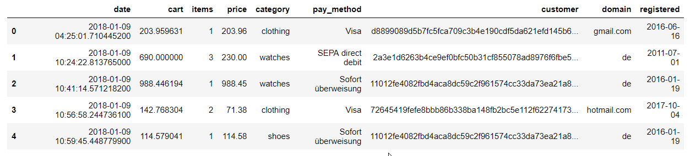

Linear Regression in Python
Linear regression is a modeling technique, in which we look for a linear relationship between the dependand and independand variable(s).
Simple Linear Regression
When we have a single independand variable we can use the "simple linear regression" to fit a regression line through a set of paired data observations. If we take dataset of n paired observations, for which we believe, they are in a linear relationship, we can try and fit a regression line in such a way, that it lies the closest to all the data points. By close we consider the distance between the estimated point and the data point along the vertical axis. We measure the fit by measuring the sum of squares of these errors and this is referred to least squares fit. Q = sum( (yi − (β0 + β1xi))2 ) This is the function we want to minimize to fit the curve.
If we visualize the curve of this function, we get:
visualize the curve
https://scipython.com/blog/visualizing-the-gradient-descent-method/
Closed form solution
To minimize function Q we calculate partial derivatives with respect to β0 and β1 and setting both expressions to zero, because we are looking for a minimum. These are called the normal equations. β1 = SXY / SXX and βˆ0 = y¯ − βˆ1 x¯ the estimate of the error variance is: σˆ 2 = SSE / (n − 2)
We are left with the final solution y = βˆ0 + βˆ1x, which fits our regression line through the data points.
What is the probability that the error is more than E? (if we assume that the errors are normally distributed with N(βˆ0 + βˆ1x, sigma)
Solving with gradient descent
To solve with a gradient descent we can pick any inital random value. With the help of partial derivatives we can then determine, which way is "down" towards the minimum.
visualize the curve
https://scipython.com/blog/visualizing-the-gradient-descent-method/
import pandas as pd
:
yi = β0 + β1xi + err
The estimated value Yi is composed of a linear function β0 + β1xi and some error ei along the vertical axis. If we assume normal distribution for the error term ei, N(0,sigma) with some error variance sigma, we can say, that our estimated value Yi falls along normal distribution Yi ~ N(β0 + β1xi, σ2)
The parameters β0, β1 are not known and must be estimated from the given data. β0 is known as the intercept and β1 as the slope parameter. The slope of the function tells us how the expected value of the dependand variable depends upon the independand variable. If the two variables are unrelated the slope parameter will equal 0.

Although this was a super short dive into data analysis, I must say, that coming from the world of web development and relational databases, I am amazed at how simple and efficient python/pandas is when it comes to wrangling, transforming and visualizing data.
That's all!
~